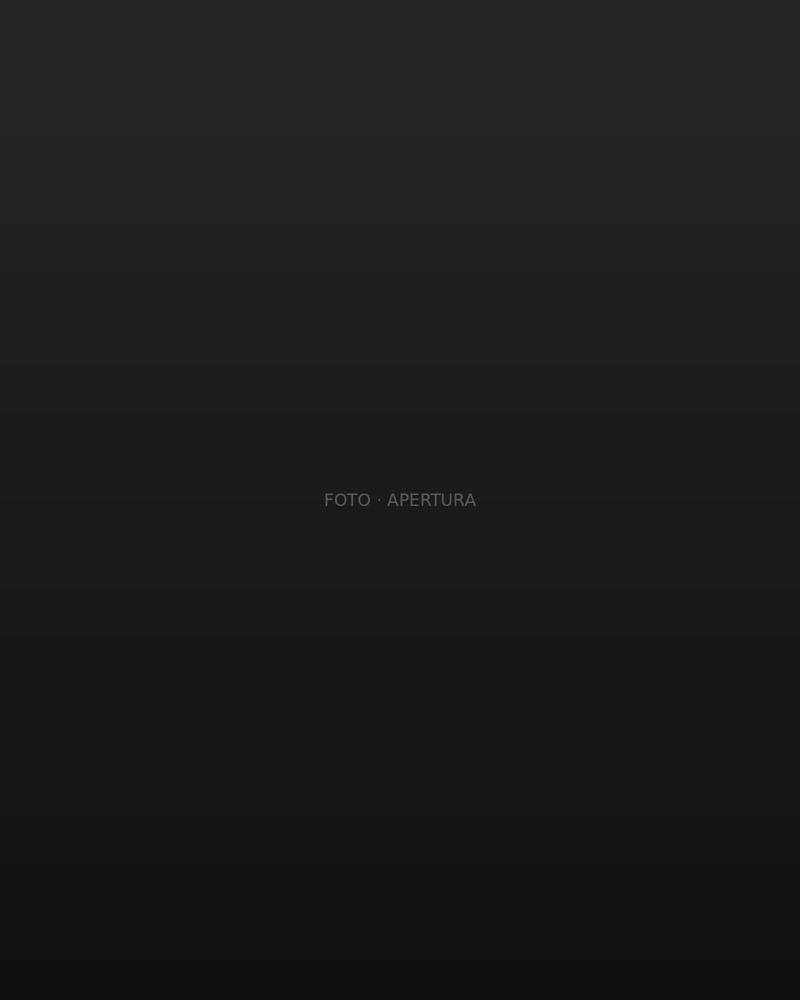
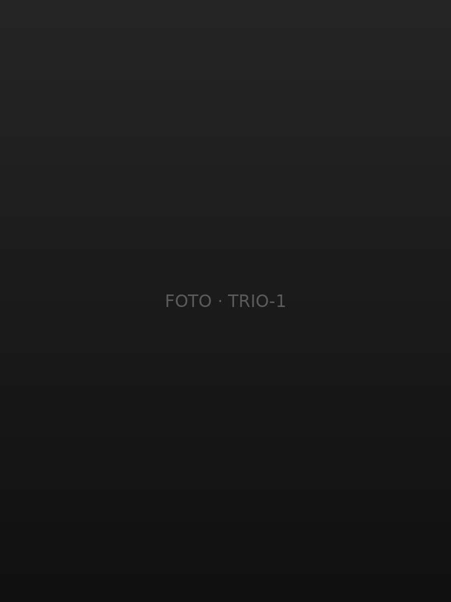
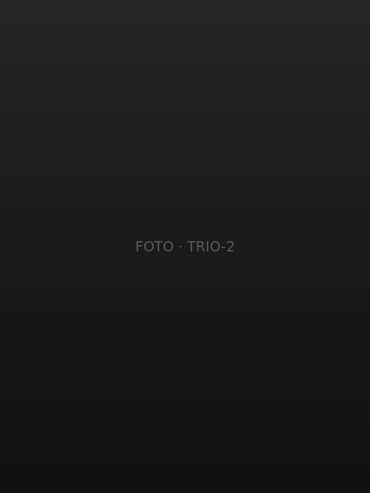
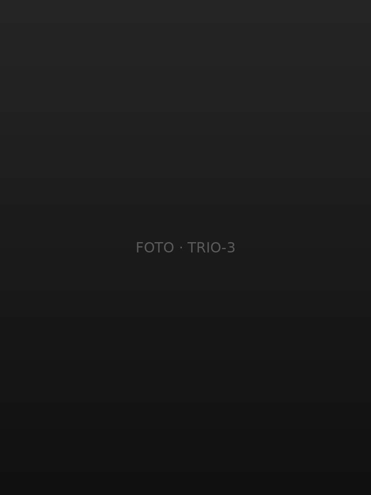

Aperitivo tutti i giorni, una drink card che Giacomo cambia spesso e una cucina che ogni settimana prova qualcosa di nuovo. Il resto lo fanno le persone intorno al banco.


Cocktail fatti bene, dal pomeriggio in poi.
Menfi · Aperitivo tutti i giorni
Ogni settimana un menu food diverso — Aperitivo tutti i giorni — La drink card di Giacomo
Uscire dagli schemi, un drink alla volta.
Non il solito aperitivo.
Ogni settimana un menu food diverso. Ogni settimana una scusa per tornare.

santo subito.


ogni settimana
una novità
La storia
Uscire
dagli
schemi
Black Sheep nasce da qui. Da queste parti la mixology è ancora agli inizi, e a noi piace l'idea di essere i primi a cambiare le cose.
Qui un drink non si beve e basta: si vive. Ricerca, creatività, gusto, e tante belle persone intorno al banco.
Perché Black Sheep?
Perché essere la pecora nera è una scelta. Prendere un'altra strada, fare le cose a modo nostro, e non avere nessuna paura di farsi notare.
il capo
del banco
new entry!
Dietro al banco c'è Giacomo, con anni di bottiglie alle spalle: la drink card la cambia lui, ogni volta che ha qualcosa di nuovo da farti provare. Quest'anno al suo fianco c'è Domenico.
Ogni settimana un menu food diverso — Aperitivo tutti i giorni — La drink card di Giacomo